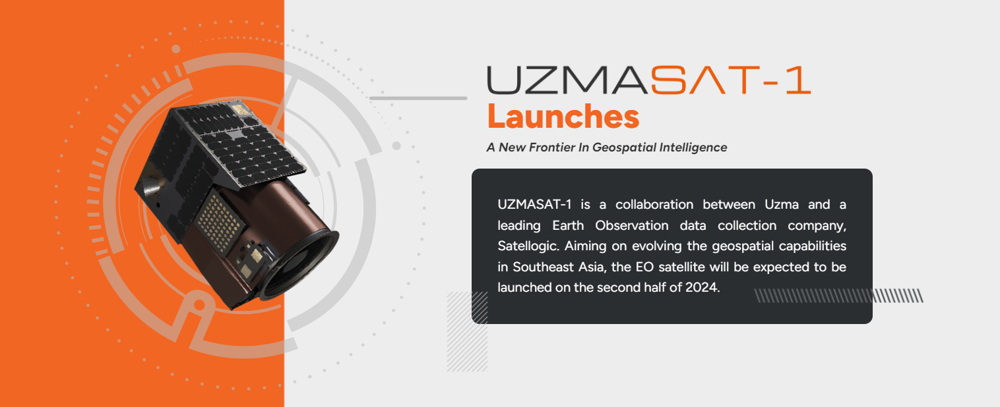
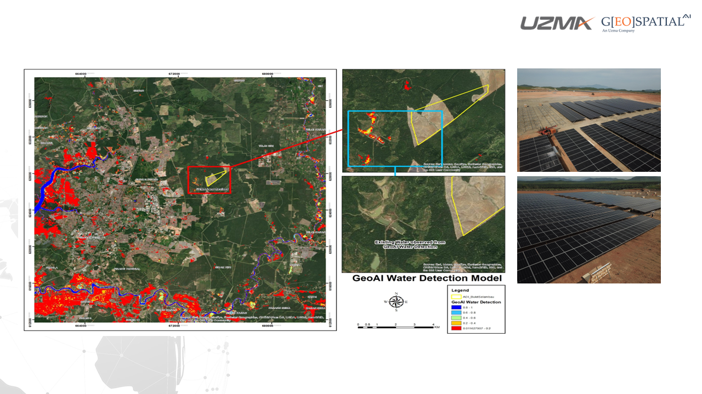

- Award, Press Release
UZMA BERHAD pioneers the UzmaSAT-1 Programme for advanced geospatial intelligence
- July 29, 2024
- By Media GeoAI
For this, it was awarded the Emerging Technology – Technology trophy at the Malaysia Technology Excellence Awards 2024.
UZMA BERHAD, a frontrunner in cutting-edge advancements, has been recognised at the Malaysia Technology Excellence Awards 2024 with the Emerging Technology accolade for Technology. This recognition comes in light of its groundbreaking initiative, the UzmaSAT-1 Programme, which is set to revolutionise the geospatial intelligence sector, especially within Southeast Asia.
The UzmaSAT-1 Programme, led by UZMA BERHAD’s wholly-owned subsidiary Geospatial AI Sdn Bhd, paves the way for innovation by enabling users to improve strategic decision-making with cost-effective access to high-quality satellite imagery. Across sectors such as government, telecommunications, energy, infrastructure, agriculture, transportation, and logistics, industries are seeking efficient solutions for operational optimisation, urban planning, environmental monitoring, and disaster management. UzmaSAT-1 delivers precise and timely data, accelerating decision-making processes and fostering innovation in these crucial areas of industry and development.

At its core, the UzmaSAT-1 Programme is the principle of “anybody can task anywhere,” a novel business model that redefines how customers access and control satellite data acquisition. This model addresses the critical challenges of long lead times, high costs, and scalability issues prevalent in traditional terrestrial data-gathering methods. It also surpasses the limitations of existing Earth Observation (EO) satellites by offering a solution that is not only cost-effective but also boasts higher revisit rates and capacity.
Uzma will launch its UzmaSAT-1 satellite in October 2024 aboard a SpaceX Falcon 9 rocket. Upon commissioning, UzmaSAT-1 will integrate into a 38-satellite constellation managed by Satellogic, a US-based leader in sub-meter resolution EO data collection. Satellogic has completed the design of the UzmaSAT-1 satellite and is currently manufacturing it.
This constellation aims to revolutionise the temporal resolution of satellite imagery by enabling up to seven revisits per day, which transcends the constraints of more traditional options. The high-resolution multispectral imagery generated by this constellation will negate the need for pansharpening processes, thereby streamlining the data acquisition and processing workflow. This innovation not only enhances efficiency but also ensures the production of pristine, actionable data.

UZMA BERHAD’s commitment to innovation extends to customising satellite technology for Malaysia’s unique environmental and climatic conditions. The programme involves the development of high-resolution satellite imagery and advanced metadata processing parameters specifically calibrated for Malaysia’s aerosol climate. This includes creating a spectral library and a solar angle library customised for the equatorial region, significantly advancing our understanding of local environmental factors. The integration of artificial intelligence to develop optimised AI models and remote sensing indices for Malaysia’s climate further exemplifies the programme’s innovative edge.
“The UzmaSAT-1 Programme is more than a technological breakthrough; it’s a paradigm shift towards more efficient, economical monitoring practices across various industries. By democratising access to affordable high-temporal and high-spectral resolution satellite data, Uzma is committed to reshaping the industry landscape and driving more sustainable outcomes,”
Dato’ Kamarul Redzuan,
Uzma Group Chief Executive Officer
“This programme stands as a testament to the company’s adaptability, cost-effectiveness, and unwavering commitment to promoting sustainable practices and achieving significant ESG objectives in Southeast Asia. Through the UzmaSAT-1 Programme, Uzma is not only advancing geospatial intelligence but also contributing to sustainable development in the region,” he added.
The UzmaSAT-1 Programme is intrinsically aligned with global sustainability goals, emphasising the importance of ESG considerations. By delivering high-quality, real-time geospatial data, the programme enables businesses and organisations in Southeast Asia to make informed decisions that resonate with environmentally responsible practices. The data’s applications are diverse, ranging from optimising resource usage in precision agriculture and supporting conservation efforts in environmental monitoring to aiding climate research for better understanding and mitigating climate change impacts.
The UzmaSAT-1 Programme represents Malaysia’s dedication to leveraging space technology for societal and environmental benefits whilst positioning the nation as a leader in the global space industry, in alignment with the Malaysian Government’s objectives outlined in Malaysia Space Exploration 2030 (MSE2030).
#MalaysiaTechnologyExcellenceAwards
Published on Asian Business Review | March 2024
Share the Post:Related Posts
Looking for Answers to Your Industry Issues?
If you want us to share more about space technology, EUDR, EO satellite applications, and industry related, feel free to drop your contact and experience the technology yourself.